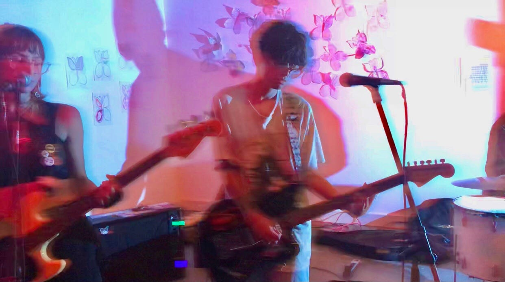

Welcome to Natalie Talks Shoegaze
This is a place where I talk about all things shoegaze. Check out one of my music blogs to get started :)
"I’ve got a huge need to hear music that’s like something else that I haven’t done before" - Kevin Shields
Shoegaze has best been described as a sub-genre of rock music, that is believe to have emerged in the late 1980’s in the underground UK rock scene. The genre is defined by its layered distorted guitar based production, its loud and long rifts, and psychedelic sounds of bass and drums. This genre draws some resemblance to the modern alternative-rock sounds.
The genre would get its name by a journalist from Sounds Magazine, who called the underground movement “shoegazing” due to Russell Yates (a guitarist for the band Moose” who would look like he was staring at his shoes while he performed the more complex rock songs. All Music would go on to state:
"The shatteringly loud, droning neo-psychedelia the band performed was dubbed shoegaze by the British press because the band members stared at the stage while they performed".
The name for the new sugenre would stick, and soon would become one of the most talked about music genres in the underground scene turning into the next decade, which would go on to become the glory years of the new sub-genre.
The video above shows possibly the most infamous shoegaze act, 'My Bloody Valentine' performing the song 'Thorn' from the band's third EP, 'You Made Me Realise'. It's a great example of the band beginning to explore the sound that would eventually become known as shoegaze.
